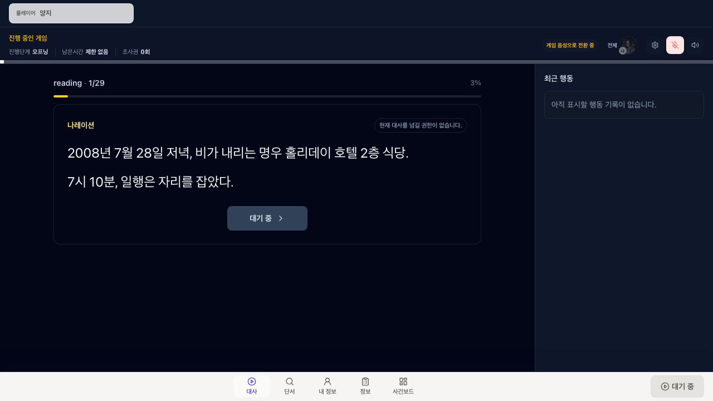
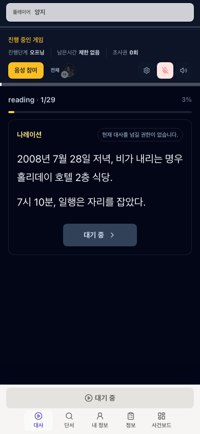
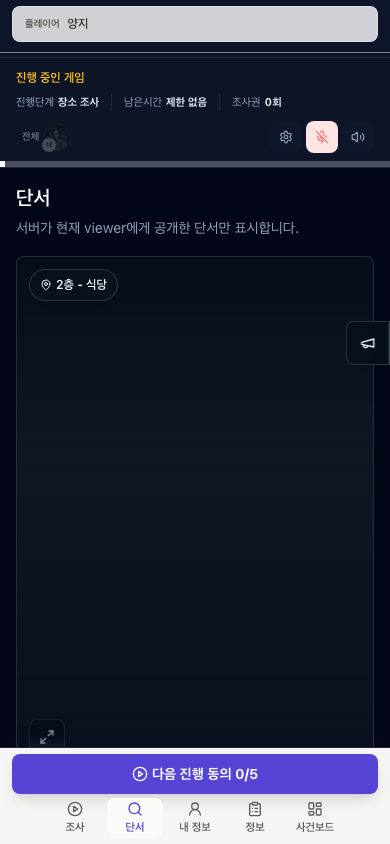
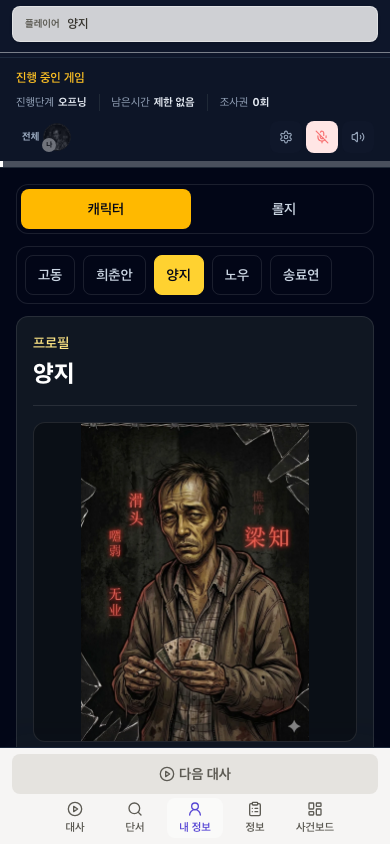
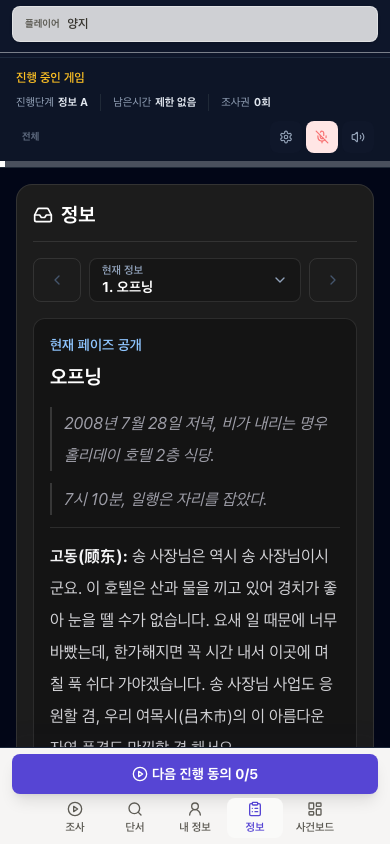
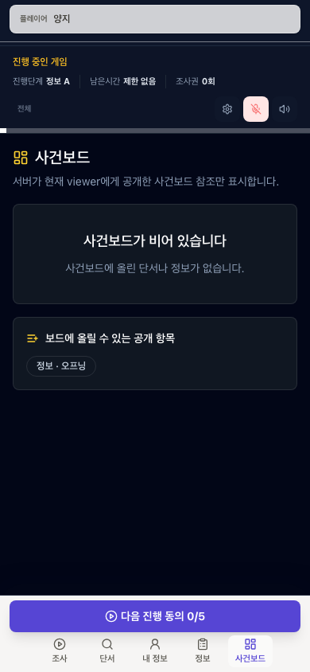
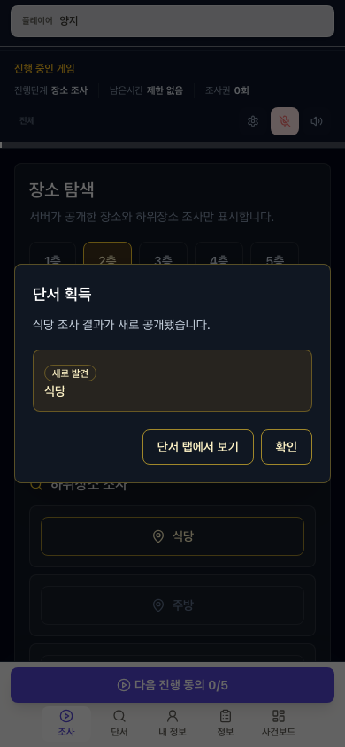
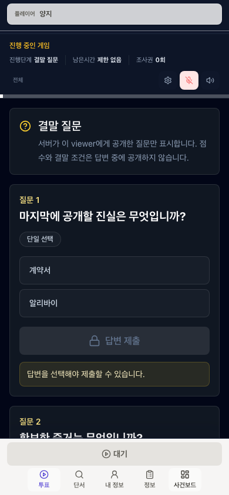
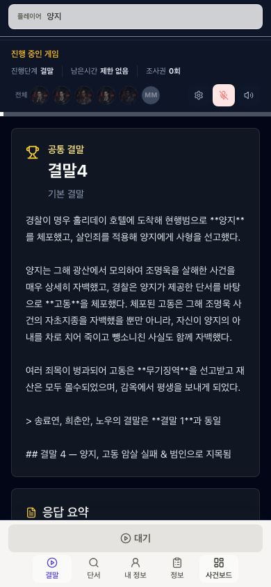

외주 디자인 의뢰 브리프 · 2026-06-25
실제 서비스 플레이 화면 PRD 및 와이어프레임
이 문서는 `명우 비지니스 호텔: 자정의 종소리` 테마의 현재 구현 runtime gameplay 화면을 바탕으로, dev control bar가 없는 실제 사용자 서비스 화면을 디자인하기 위한 의도, 기능, 상태, 반응형 구조를 정리한 전달용 브리프입니다.

1. 디자인 의뢰 목적
무엇을 디자인하나
플레이어가 게임 중 실제로 보는 한 화면입니다. 대사를 읽고, 장소를 조사하고, 단서를 확인·공유·사용하고, 자기 역할과 공개 정보를 보고, 사건보드에 자료를 모아 비교하고, 투표와 결말을 확인하는 통합 플레이 화면을 디자인합니다.
무엇을 디자인하지 않나
현재 개발용 페이지에 있는 run 생성, viewer 전환, phase jump, reading-line jump, reset/end, raw diagnostics 같은 dev control은 실제 서비스 UI가 아닙니다. 디자인 시안에서는 노출하지 않거나 별도 개발자 도구로 분리합니다.
기존 `/dev/runtime-harness`는 구현 검증용 화면입니다. 이 브리프에서는 그 화면에서 현재 구현된 플레이 요소만 참고하고, 사용자가 실제 서비스에서 보는 화면으로 재해석합니다.
2. 현재 구현 스크린샷
아래 이미지는 `명우 비지니스 호텔: 자정의 종소리` published theme id를 고정한 `/dev/runtime-harness` 화면에서 dev-only control section을 숨긴 뒤 캡처했습니다. 단서 화면은 실제 조사 후 단서를 획득한 상태, 정보 화면은 phase 정보가 전달된 상태입니다. 외주사는 이 이미지를 “현 구현 기능과 정보 구조의 근거”로 보고, 최종 디자인에서는 실제 서비스 톤과 조작성을 강화하면 됩니다.








3. 제품 원칙
플레이어는 지금 할 일을 즉시 안다
현재 단계의 핵심 행동이 중앙에 있어야 합니다. 예를 들어 대사 단계에서는 지금 읽을 문장, 조사 단계에서는 조사할 장소, 투표 단계에서는 답변할 질문이 첫 화면에서 보여야 합니다.
보이는 것과 실행 가능한 것은 다르다
장소, 단서, 후보, 음성 채널은 보일 수 있지만 지금 실행 가능하다는 뜻은 아닙니다. 실행 불가는 숨기는 대신 disabled 상태와 짧은 이유 안내로 처리합니다.
게임의 진실은 서버가 정한다
프론트 디자인은 누가 무엇을 볼 수 있는지, 어떤 결과가 나왔는지, 투표가 잠겼는지 임의로 추측하지 않습니다. 빈 상태와 로딩은 가능하지만 가짜 단서나 결과를 만들지 않습니다.
4. 실제 서비스 화면 정보 구조
| 영역 | 역할 | 디자인 요구 |
|---|---|---|
| 상단 현재 플레이어/음성 바 | 현재 캐릭터, 음성 연결, 듣기/말하기 상태 표시 | viewer 전환 UI가 아니라 정적 현재 사용자 정보로 보이게 한다. |
| 진행 헤더 | 진행 중인 게임, 단계, 남은 시간, 조사권, 진행률 표시 | 작게 고정하되 현재 단계와 제한 상태를 빠르게 읽을 수 있어야 한다. 최종 서비스 디자인에서는 `명우 비지니스 호텔: 자정의 종소리`처럼 실제 테마명이 명확히 보여야 한다. |
| 중앙 phase panel | 현재 단계의 주 행동 영역 | 대사/조사/투표/결말이 각각 다른 밀도를 가져도 shell은 일관되게 유지한다. |
| 항상 보이는 탭 | 대사 또는 조사 + 단서 + 내 정보 + 정보 + 사건보드 | 탭 자체는 숨기지 않는다. 내용이 없으면 빈 상태를 보여준다. |
| 하단 primary action | 현재 단계의 대표 action 또는 대기 상태 | 모바일에서 엄지 조작 가능해야 하며 disabled 이유를 확인할 수 있어야 한다. |
| 데스크톱 aside | 최근 행동, 채팅, 보조 정보 | 중앙 흐름을 방해하지 않고 스캔 가능한 secondary 영역으로 둔다. |
5. 와이어프레임
모바일 기본 구조
데스크톱 기본 구조
모바일은 하단 action과 탭 접근성이 우선입니다. 데스크톱은 중앙 phase panel을 넓게 유지하고, 오른쪽 aside에는 최근 행동이나 채팅 같은 보조 정보만 둡니다.
6. 화면별 PRD
7. 상태 및 상호작용 규칙
| 상태 | 사용자에게 보이는 방식 | 주의사항 |
|---|---|---|
| Loading | `플레이 정보를 불러오는 중입니다`와 skeleton | 전체 shell은 먼저 보여주고, 현재 panel만 skeleton 처리한다. |
| Fail-closed | `현재 플레이 정보를 불러올 수 없습니다` | 가짜 대사, 단서, 결과, 권한을 만들어 표시하지 않는다. |
| Disabled action | 버튼은 보이지만 disabled, 클릭/hover/focus 시 이유 표시 | 버튼 옆에 긴 이유 문장을 항상 붙이지 않는다. |
| Pending | 버튼 단위 spinner, `요청 중`, 임시 잠금 | 공유된 게임 결과는 서버 snapshot 확인 후 확정한다. |
| Reconnect | 기존 화면 유지 + 조작 action 잠금 + `재연결 중` | 공유/전달/공개 modal은 닫아 stale command를 막는다. |
| Postgame | 결말과 리뷰 덱, 모든 단서/정보/역할지 공개 | gameplay action은 read-only 또는 disabled로 전환한다. |
8. 외주 디자인 산출 범위
필수 Figma 화면
- 모바일 390px 기준: 대사, 조사, 단서, 내 정보, 정보, 사건보드, 투표, 결말
- 데스크톱 1280px 기준: 대사, 단서 split/detail, 사건보드 비교, 결말 review
- 로딩, 빈 상태, 권한 없음, disabled reason, pending, reconnect
- 관전자 read-only/listen-only 상태
필수 컴포넌트
- current player identity bar와 compact voice control
- progress header, phase gauge, timer, action count
- persistent bottom nav와 desktop nav variant
- clue/info card, detail panel, action menu, toast, modal
- case board rail, deck, compare card, reorder affordance
dev control bar, phase jump, reading-line jump, viewer switch dropdown, reset/end run, fixture fallback 배지, run/session id, snapshot revision, raw token, raw debug JSON은 실제 서비스 디자인에 포함하지 않습니다.
9. 디자인 톤과 품질 기준
분위기
머더미스터리의 몰입감은 유지하되, 플레이 중 반복해서 쓰는 도구이므로 과한 장식보다 읽기 쉬운 대비, 안정적인 간격, 빠른 스캔이 중요합니다.
모바일 조작성
하단 primary action과 탭은 한 손 조작이 가능해야 합니다. 긴 문장, 긴 단서명, 여러 선택지가 있어도 버튼과 텍스트가 겹치면 안 됩니다.
정보 밀도
게임 중에는 빠른 판단이 필요합니다. 제목, 상태, action, detail을 명확히 나누고, 보조 설명은 card 내부의 두 번째 시선에 배치합니다.
10. 구현 기준 메모
- 현재 구현 capture source:
/dev/runtime-harness - 서비스 shell 기준:
GameLayout+RuntimeShell - 중요 계약: frontend는
RuntimeSnapshot과availableActions를 화면용으로 projection한다. - 참고 문서:
docs/plans/2026-06-18-runtime-harness-adapter-prd-prep/README.md - dev control 제외 기준:
11-dev-harness-control-prd.md의 service boundary
“첨부된 스크린샷은 개발용 검증 페이지에서 현재 구현된 플레이 기능만 확인하기 위한 자료입니다. 최종 시안은 실제 유저가 접속한 게임 화면으로 보고, 개발자 조작 바와 raw 진단 정보는 제외해 주세요.”